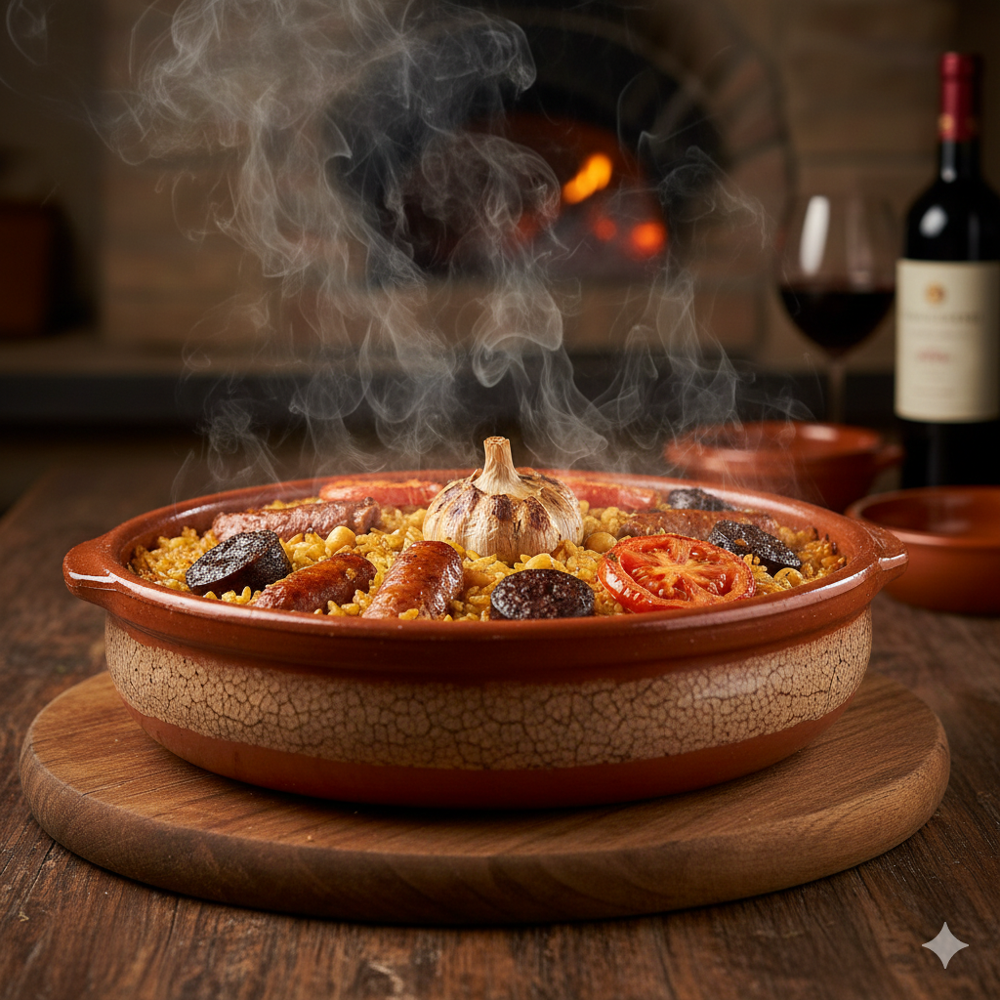

Arròs al Forn: L'Ànima de Quart de Poblet
Redacció Gastronòmica | Publicat el 7 de Desembre, 2025

No hi ha festa a Quart sense una bona cassola...
La Ruta dels Sabors
"El secret no està només en els ingredients..."